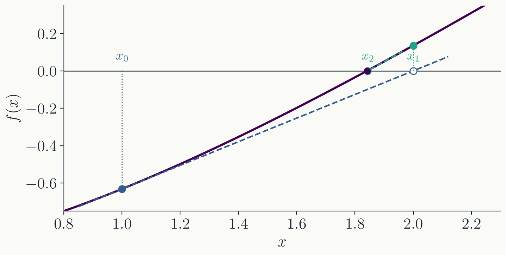
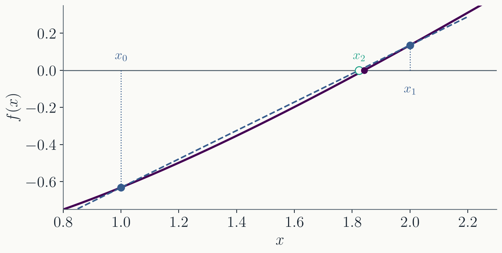
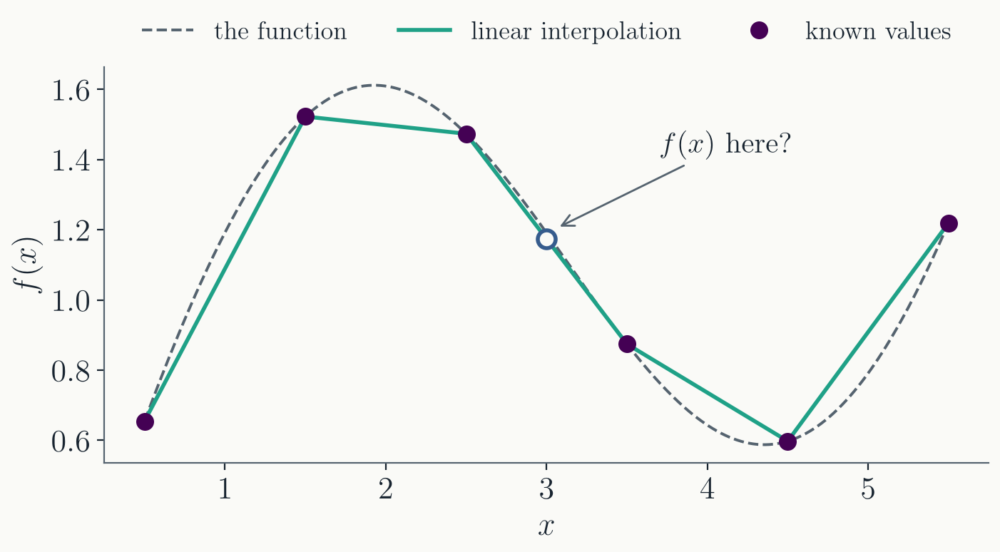
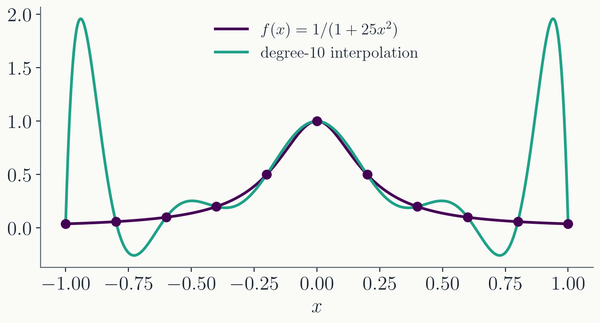

Today
- Root finding, finished. Newton, secant, and the code you will write for the homework.
- Interpolation. Estimating $f(x)$ between known values, up to Lagrange's formula.
- Tools. VS Code, and how to work with Claude Code in this course.
Part I · Root finding, continued
Newton · Secant · Writing the code
Where we were
- Solve $f(x) = 0$ by iterating: a sequence $x_0, x_1, x_2, \dots$ approaching the root $x_*$.
- Fixed point. Rewrite as $x = g(x)$ and iterate $x_{n+1} = g(x_n)$. Converges if $|g'(x_*)| < 1$; the error shrinks by that factor each step.
- Bisection. Keep an interval with a sign change, halve it. The error shrinks by $\tfrac12$ each step, no matter what $f$ is.
- Both are linear: a fixed number of digits per step.
Today: the methods that gain digits faster and faster.
Newton's method

- Follow the tangent line at $x_n$ down to the axis: $x_{n+1} = x_n - f(x_n)/f'(x_n)$.
- It is fixed-point iteration with $g(x) = x - f(x)/f'(x)$.
Newton's method
Taylor with remainder around $x_n$, evaluated at the root where $f(x_*) = 0$, gives exactly
$$x_{n+1} - x_* = \frac{f''(\xi_n)}{2f'(x_n)}\,(x_n - x_*)^2, \qquad \xi_n \text{ between } x_n \text{ and } x_*$$- The error is squared each step (quadratic convergence): $k$ correct digits means $e_n \sim 10^{-k}$, and $e_n^2 \sim 10^{-2k}$ means $2k$ correct digits.
- As $x_n \to x_*$, the coefficient settles at $f''(x_*)\,/\,2f'(x_*)$.
- In fixed-point language: $g'(x) = f f''/(f')^2$, so $g'(x_*) = 0$. The linear term is gone.
The price: it needs $f'$, and a starting point close enough to the root.
Drawbacks of Newton's method

- $f(x) = \arctan x$ from $x_0 = 1.5$: each tangent overshoots and lands farther away. From $x_0 = 1.3$ it converges.
- $f'(x_n) \approx 0$ sends $x_{n+1}$ very far away. The iteration can also get stuck in a cycle.
- There is no bracket and no guarantee: fast near a root, unpredictable far from one.
Secant method
No $f'$? Replace the tangent with the line through the last two points: $\;x_{n+1} = x_n - f(x_n)\,\dfrac{x_n - x_{n-1}}{f(x_n) - f(x_{n-1})}$

- Convergence order is the golden ratio $\varphi \approx 1.62$, but each step costs only one new evaluation of $f$. Per evaluation it usually beats Newton.
- Needs two starting points, no bracket, no derivative. It shares Newton's failure modes.
Practical root finders combine a fast method with bisection as a fallback; Brent's method is the standard example.
Comparison
$|x_n - x_*|$ for $f(x) = x - 2 + e^{-x}$. Fixed point and Newton from $x_0 = 1$; bisection on $[1, 2]$; secant from $x_0 = 1$, $x_1 = 2$.
| $n$ | fixed point | bisection | secant | Newton |
|---|---|---|---|---|
| 1 | $2.1\times10^{-1}$ | $9.1\times10^{-2}$ | $1.8\times10^{-2}$ | $1.6\times10^{-1}$ |
| 2 | $3.7\times10^{-2}$ | $3.4\times10^{-2}$ | $2.5\times10^{-4}$ | $2.1\times10^{-3}$ |
| 3 | $6.0\times10^{-3}$ | $2.9\times10^{-2}$ | $4.2\times10^{-7}$ | $4.1\times10^{-7}$ |
| 4 | $9.5\times10^{-4}$ | $2.3\times10^{-3}$ | $9.9\times10^{-12}$ | $1.6\times10^{-14}$ |
| 5 | $1.5\times10^{-4}$ | $1.3\times10^{-2}$ | $0$ | $0$ |
- Needs: a contracting $g$ / a bracket / two starts / $f'$ and a good start.
- Rate: linear ($0.16$) / linear ($0.5$, not monotone) / order $1.6$ / order $2$.
When to stop
- Three natural tests: the residual $|f(x_n)| < \varepsilon$; the step $|x_{n+1} - x_n| < \varepsilon$; the bracket $b - a < \varepsilon$.
- Absolute or relative? $|x_{n+1} - x_n| < \varepsilon\,|x_n|$ is the same test for a root at $10^{-3}$ and at $10^{9}$. Absolute tolerance only makes sense when you know the scale, or the root may be zero.
- The floor. Near $x_* = 1.84$, doubles are $2.2\times10^{-16}$ apart (Lecture 1). Ask for $|x_{n+1} - x_n| < 10^{-20}$ and the loop never ends. The residual has a floor too: about $\epsilon\,|x_* f'(x_*)|$.
Do not ask for more digits than the format has.
Reporting failure
- Always set a maximum number of iterations; without one, a non-converging iteration loops forever.
- NaN propagates silently:
NaN < tolis false, so a NaN iterate never triggers the stop test. Check withstd::isnan. - Return both the answer and whether the iteration converged:
std::tuple<bool, double> result = bisection(f, 1.0, 2.0, 1e-12);
bool ok = std::get<0>(result); // std::get<n>: the n-th tuple element
double x = std::get<1>(result);
if (!ok) { std::cout << "did not converge\n"; }
Passing a function to a function
Root-finding functions take $f$ as an argument. This requires writing a function template:
template <typename F> // F: anything callable as f(x)
double evaluate(const F& f, double x) {
return f(x);
}
double square(double x) { return x * x; }
evaluate(square, 3.0); // 9.0
The compiler generates a version of
evaluate for every type F it is called
with.
Lambda functions
A function can also be written with no name:
const double e = 0.3, M = 1.0;
auto kepler = [e, M](double E) { return E - e * std::sin(E) - M; };
evaluate(kepler, 1.0);
evaluate([](double x) { return x * x; }, 3.0); // 9.0
- The brackets are the capture list: the outside variables the lambda may use.
- This is how a root finder gets an $f$ with parameters in it: capture them.
Bisection in C++
template <typename F> // f(a) and f(b) must have opposite signs
std::tuple<bool, double> bisection(const F& f, double a, double b, double tol) {
const int max_iter = 200; // 2^-200 is far below epsilon
double fa = f(a);
if (fa * f(b) > 0.0) return {false, a}; // no sign change: no bracket
for (int i = 0; i < max_iter; ++i) {
const double mid = 0.5 * (a + b);
const double fm = f(mid);
if (std::abs(fm) < tol) return {true, mid};
if (fa * fm < 0.0) { b = mid; } else { a = mid; fa = fm; }
}
return {false, 0.5 * (a + b)};
}
Needs
<cmath> and <tuple>. Run on
$x - 2 + e^{-x}$, $[1, 2]$: $1.84141$. On $x^2$, $[1, 2]$:
false.
Part II · Interpolation
From two points to Lagrange's formula
Interpolation
So far $f(x)$ was a formula we could evaluate anywhere. Often you only have values at discrete points: tabulated material properties, output of a simulation on a grid, measured data.

Interpolation: estimate $f$ between known values. Next lecture builds integration rules directly on top of it.
Linear interpolation
The simplest estimate: connect two known values with a straight line.
$$f(x) \approx f(x_0) + (x - x_0)\,\frac{f(x_1) - f(x_0)}{x_1 - x_0}$$- Exact at $x_0$ and $x_1$; in between, it is the chord.
- What it misses is the curvature: the error grows with $f''$ and with the spacing $x_1 - x_0$.
More points
Rearrange the linear formula into a symmetric form:
$$f(x) \approx \frac{x - x_1}{x_0 - x_1}\,f(x_0) + \frac{x - x_0}{x_1 - x_0}\,f(x_1)$$Each coefficient is $1$ at its own node and $0$ at the other. The same pattern works for three points:
This is a parabola through three points: quadratic interpolation.
Lagrange's interpolation formula
For $N + 1$ points, the pattern gives
$$f(x) \approx \sum_{i=0}^{N} f(x_i) \prod_{\substack{j=0 \\ j \neq i}}^{N} \frac{x - x_j}{x_i - x_j}$$- The $x_i$ are called nodes. They need not be evenly spaced, only distinct.
- This is a polynomial of degree $N$ through $N + 1$ points, and it is the unique one.
Unique means any method that fits a degree-$N$ polynomial through these points produces this polynomial.
Runge's phenomenon

- With equally spaced nodes, high-order interpolation can oscillate wildly near the ends of the interval.
- Adding more points makes it worse, not better.
Keep the order low and interpolate locally, a few points at a time. That is exactly what the integration rules next lecture do.
Part III · Tools
VS Code · Claude Code
VS Code
- An editor attached to a terminal, not a replacement for it. Everything you have done so far works unchanged inside it.
- Open a project from the terminal, in the
repository directory (Windows: inside the Ubuntu window):
cd hw1-yourname code . - The integrated terminal
(
Ctrl+`) is the same shell: compile withg++ -std=c++20and run there, as before. - Install the C/C++ extension (and WSL on Windows, from the setup notes).
VS Code habits
Ctrl+P: open a file by typing part of its name.Ctrl+Shift+P: every command by name.- Red squiggles are compiler diagnostics
before you compile. Hover one; it is usually the same message
g++would print. - The Source Control panel shows the diff against the last commit. Read it before you commit, especially when you did not type the change yourself.
macOS: Cmd in place of
Ctrl.
Claude Code
- An AI agent that runs in the terminal, inside your repository. It does not just answer questions: it reads and edits files, compiles, runs, and uses git, showing each step for approval.
- Install and start (macOS, Linux, WSL):
curl -fsSL https://claude.ai/install.sh | bash cd hw1-yourname claude - The first run asks you to log in.
- Before doing anything it reads
AGENTS.mdin the repository. Every course repository ships one; it carries the course rules.
What the agent will and will not do
From the AGENTS.md in
your homework repositories:
- It helps with implementation. Writing C++ with you, debugging, reading compiler errors, running the code, using git.
- It does not write your writeup. Predictions, explanations, and reconciliations are yours. It will critique a draft you wrote, but not produce one.
- It does not tell you what a result should be before you have run the code and looked yourself.
The writeup is what you defend in person on Fridays. An explanation you cannot defend is worth less than a wrong one you reasoned out yourself.
Directing an agent is a skill
- Be specific. "Implement the one-pass formula from the README, doubles everywhere, print both results" beats "do problem 2".
- Work in small steps and read every diff. Course rule: no agent code you have not read.
- Make it show evidence: compile, run, and paste actual output, not claims that it works.
- It is confidently wrong at times. Catching that is a skill this course grades, and it takes knowing the physics yourself.
Where this goes next
- Next lecture: numerical integration, built from interpolation.
- References:
- Numerical Recipes, 3rd ed., Chapter 3 (interpolation) and Chapter 9 (root finding).
- Burden & Faires, Numerical Analysis, Chapter 3.